Vallø Borgring
Ringburg


Vallø Borgring - Letztes Update 05.02.2025
Navidaten: 55.46975 12.12190 oder: Ringstedvej 197, 4600 Køge (Direkt neben der Autobahnausfahrt 33 "Lellinge" an der E47)
05.02.2025
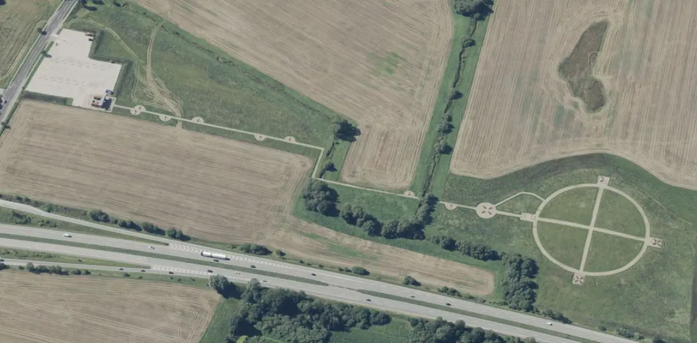
Dies ist ein Luftfoto vom 02.09.2023 von Skråfoto - Lizenz: CC BY 4.0 - das die komplette Anlage vom Parkplatz bis zur Ringburg zeigt. Skråfoto ist eine Webanwendung, die von der Dänische Agentur für Datenversorgung und Infrastruktur weltweit kostenlos bereitgestellt wird. Die Aufnahmen werden alle zwei Jahre erneuert und neben einer Senkrechtaufnahme wird ein Schrägbild aus jeder Himmelsrichtung angeboten, das man über eine Adresssuche aufrufen kann. Eine hochauflösende Detailansicht nur von der Ringburg, vom gleichen Blickwinkel aus betrachtet, stelle ich hier noch ein - Vergrößerung durch Mausklick.

18.09.2023
Im Januar 2021 wurde durch die damalige Kulturministerin Joy Mogensen ein fast 400-seitiger Antrag nach Paris an die UNESCO Welterbe Institution (International Council on Monuments and Sites - ICOMOS) auf den Weg gebracht, der die Aufnahme der fünf dänischen Wikingerburgen in die Welterbeliste zum Ziel hat. Die Entscheidung fällt nun auf der 45. Sitzung des Welterbekomitees vom 10. bis 25 .September 2023 in Riad, Saudi-Arabien. Jeg ønsker ansøgningen held og lykke!
Es hat geklappt - Herzlichen Glückwunsch - Gestern, am 17.09.2023, wurde in Riad in Saudi-Arabien auf der 45. Sitzung des Welterbekomitees der UNESCO beschlossen, die dänischen wikingerzeitlichen Ringburgen - Aggersborg, Fyrkat, Nonnebakken, Borgring und Trelleborg - zum Welterbe zu erklären. Herzlichen Glückwunsch!
12.03.2023 - über diese Webseite wird für 2025 die Eröffnung eines Erlebniszentrums beim Vallø Borgring angekündigt. Dort heißt es u.a. (übersetzt): "...Borgring Erlebniszentrum - Borgring wurde nie fertiggestellt und markiert das Ende der Wikingerzeit und den Beginn des Dänemarks, das wir heute kennen. Die Gesellschaft und der Glaube der Wikinger änderten sich drastisch. Das Erlebniszentrum Borgring erzählt diese Geschichte in einem neuen Museum am Standort der Burg. Dem Erlebniszentrum angegliedert ist ein Forschungszentrum, das die Wikingerburgen und die Zeit vor dem Systemwechsel erforschen wird, was das Ende der Wikingerzeit erklären kann. Das 1.800 Quadratmeter große Erlebnis- und Forschungszentrum wird auf der Grundlage eines Architekturwettbewerbs bestimmt, während die Ausstellungen von der Ausstellungsabteilung des Museums mit Unterstützung des Designers Jim Lyngvild entwickelt werden. Das Erlebniszentrum wird im Frühjahr 2025 eröffnet...." Dafür werden gut 50.000.000 Dänische Kronen = 6.700.000 von verschiedenen Geldgebern aufgewendet!
Das Architekturbüro LOOP Architects und sein Team (mit LYTT Architecture und dem Ingenieur Viggo Madsen A/S als Unterberater) sind inzwischen als Gewinner des Architekturwettbewerbs für das neue Borgring Erlebniszentrum in der Nähe von Køge bestimmt worden. Über deren Webseite kann man sich anschauen, wie das Projekt mal aussehen soll.
Die Entscheidung für solch ein Zentrum fiel sicherlich im Zusammenhang mit der Bewerbung zur Aufnahme in das UNESCO Welterbe. Seit 2009 arbeitet man nämlich mit den anderen dänischen Ringburgen an der Bewerbung. Die Entscheidung fällt nun auf der 45. Sitzung des Welterbekomitees, die vom 10. bis 25. September 2023 in Riad, Saudi-Arabien, stattfindet - Jeg ønsker ansøgningen held og lykke!
Bilder von meinem Besuch vor Ort am Freitag, 23.09.2022, siehe ganz unten.
2016 - Das Gesamtkonzept des Projektes "Vikingeborgen", mit der die neu entdeckte Ringburg "Vallø Borgring" präsentiert wird, überstrahlt wirklich alles, was ich bislang dazu in Dänemark gesehen habe. Das Projekt soll nämlich nicht nur wichtige Teile der Ringburg zutage bringen, sondern gleichzeitig auch einem interessierten Publikum Informationen zur Ausgrabung, den Funden und der Wikingerzeit vermitteln. Die Entwicklungsabteilung von Museum Südostdänemark entwickelte das Konzept und übernahm die Gesamtgestaltung. Innerhalb dieses Projektes wurde natürlich eine ansprechende, informative Homepage erstellt. Mit dem in 2017 aktuellen Eintrittspreis (45 DKK - ca. 6.- ) erhielt man eine kleine klappbare Virtual-Reality-Brille (kostete im Internet schon alleine 14,99 !). Diese wird über das Smartphone gesteckt und mit der kostenlosen App "Vikingeborgen" genutzt (in DK/GB/D). Diese App lädt man sich am besten vorab per WLAN auf sein Handy (für iPhone und Android). Darüber sind vielfältige Infos, Videos und Animationen rund um das Projekt abrufbar. Sie ist in erster Linie als Ergänzung zur kombinierten Ausgrabung / Ausstellung gedacht.
Nach der Ankunft auf dem nun in 2020 gebührenfreien Parkplatz hat man von der Aussichtsplattform des Ankunftszentrums aus ca. 6 m Höhe einen guten Überblick über die Burganlage. Die Ringburg wurde als Kulisse nachgebaut, damit man sich das beeindruckende Bauwerk in seinen Dimensionen besser vorstellen kann. Die offizielle Eröffnung der Anlage wurde durch Königin Margarethe II. von Dänemark am Montag, 30.05.2016, gegen 14.30 Uhr, höchstpersönlich vorgenommen. Ab dem 01.06.2016 ist das Projekt für die Öffenlichkeit freigegeben.
Die laufenden Ausgrabungen finden immer nur vom 01.06. bis 31.08. eines jeden Jahres statt und sind bis einschließlich 2018 angedacht. Danach sollte die gesamte Anlage zurückgebaut und wieder der Natur überlassen werden. Laut Webseite war aber wohl die Anlage zw. 20.05. und 20.08.2020 geöffnet.
Vikingeborgen auf Facebook - darüber dürften auch die meisten Informationen zu erlangen sein.
Die Beiträge der vier beteiligten Archäologen in dänischer Sprache sind in der App als Blog abrufbar, aber auch über das Internet unter:
2014 entdeckten die dänischen Archäologen Søren Sindbæk und Nanna Holm die vergessene Wikingerburg "Vallø Borgring" auf einem Feld außerhalb des Dorfes Lellinge, in der Nähe von Køge, auf der Insel Seeland. Die beiden Archäologen vermuteten bereits vor der Entdeckung der Burg, dass auf Seeland noch eine weitere Ringburg des Trelleborg-Typs liegen musste. Spätestens bei den umfangreichen Arbeiten zu dem 2014 erschienen Buch über die Ringburg "Aggersborg" wurde deutlich, dass die Entfernungen unter den einzelnen Ringburgen jeweils einem Tagesmarsch entsprachen, also in jeweils ca. 30 km bis 40 km Entfernung lagen. Von daher vermutete man eine weitere Ringburg im Osten Seelands. Vallø Borgring ist übrigens der erste Fund einer Ringburg seit mehr als 60 Jahren in Dänemark. Zu dieser Ringburglokalität gab es aber auch schon in den Jahren 1875 und 1970 Andeutungen im Hinblick auf eine kreisförmige Wallanlage mit dem Namen "Borgerring".
Mit LIDAR-Fotos der Landschaft und Gradiometer-Messungen konnten die Archäologen dann einen perfekten Kreis mit 145 Metern Durchmesser ausmachen, der sich von der Landschaft abhob. Nach der Testgrabung wurde ihre Vermutung bestätigt: Es handelte sich hierbei um eine Wikingerfestung in Form einer Ringburg. Bereits auf älteren Luftfotos des Bereiches zeichnet sich für den aufmerksamen Beobachter eine ringförmige Spur in der Landschaft ab (Auf "www.bing.de" ist unter der Rubrik Karten aktuell noch ein älteres Luftfoto zu sehen, wärend bei Google Maps schon ein neueres Bild zu finden ist).
Die entdeckte Ringburg umfasst ein Areal von 4305 m², das ca. 145 Containern entspricht, wie sie im Eingangsbereich zu sehen sind! Der ca. 11 m breite Wall war eine Kombination aus Erde und Grassoden, die hierfür tonnenweise bewegt wurden. Grassoden waren früher eine Ressource. Benutzte man diese für den Bau der Ringburg, entfernte man gleichzeitig die Weidemöglichkeit für das Vieh. Ein Meter des Walles aus Grassode entspricht der Fläche einer 4,3 Hektar großen Wiese. Wenn der Wall 4 Meter hoch war, war Material von 17.220 Kubikmetern nötig um diesen zu füllen. Dies entspricht dem Volumen von etwa 227 der Ausstellungscontainer, die mit der Hand gefüllt werden mussten!
Auf dem Wall war eine Palisade aus Eichenholz errichtet worden, für die sehr viele geeignte Bäume gefällt werden mussten. Wenn man die Toröffnungen weglässt, mussten 434 Meter des Walles mit Bauholz bedeckt worden sein. Dafür waren 1446 Bretter nötig, die man von rund 90 großen Eichenbäumen nahm. Dabei musste eine Eiche mindestens 200 Jahre alt sein, um die richtige Größe zu haben.
2015 begannen Dänemarks Burgzentrum und die Universität Aarhus mit der Entwicklung eines Projekts, wofür sie von A. P. Møllers und Gattin Chastine Mc-Kinney Møllers Stiftung für gemeinnützige Zwecke, Køge Kommune und Dänemarks Nationalmuseum Unterstützung erhielten.
Vier Archäologen mit unterschiedlichen Spezialgebieten haben bis 2018 Zeit erhalten, um die größten Geheimnisse der Ringburg zu enthüllen. Jedes Jahr werden sie in einem neuen Gebiet in und um die Wikingerburg herum graben. Die verschiedenen Gebiete enthalten hoffentlich die Antworten auf die vielen Fragen der Archäologen. Deren Blog zu den Ausgrabungen in dänischer Srache kann man über die o.a. App verfolgen.
Aufgabenstellung für 2016:
Wann wurde die Ringburg gebaut?
Warum wurde die Ringburg hier gebaut?
Wie lange dauerte der Bau der Ringburg?
Aufgabenstellung für 2017:
Wohnten Menschen im Innenbereich der Ringburg?
Hatte die Ringburg denselben Bauherrn wie die anderen Ringburgen, die man gefunden hat?
Welche Rolle spielten die Ringburgen für die Wikinger?
Wann und wie wurde die Ringburg zerstört?
Aufgabenstellung für 2018:
Gab es Siedlungen außerhalb der Ringburg?
Welchen Zweck hatte diese Ringburg? War die Burg als Festungswerk, als Machtdemonstration oder für einen religiösen Zweck gebaut worden?
Was hatte der Übergang zum Christentum mit den Ringburgen zu tun?
Wie konnten solch große Bauwerke aus Dänemarks Geschichte verschwinden?
Über die ersten Testgrabungen konnten bereits einige Fragen beantwortet werden. Die Ringburg wurde wohl zur Zeit Harald Blauzahns, wie auch die anderen dänischen Ringburgen errichtet. Im Nordtor wurden nämlich massive, verkohlte Eichenbalken entdeckt, die zur Altersbestimmung mittels der C-14 Methode geeignet waren. Demnach wurde die Bäume hierfür im Zeitraum zwischen den 900er und den frühen 1000er n.Chr. gefällt. Ein weiteres Indiz stellt die Torbreite von 10,60 m dar, sie entspricht der Torbreite in Fyrkat, die auch vom Gesamtdurchmesser vergleichbar ist.
Innerhalb des Burgareals wurden z.B. keine Pfostenlöcher gefunden, so dass man (bislang) annimmt, dass entgegen den anderen Ringburgen keine Häuser im Innern des Walles standen. Es fanden sich auch bislang, weder bei den Testgrabungen noch bei den Metalldetektorsuchen, irggendwelche Funde aus der Wikingerzeit. Vielleicht wurde die Burg nie fertiggebaut und somit nie genutzt. In der näheren Umgebung der Ringburg, die an einem Verkehrsknotenpunkt lag und in deren Nähe eines der besten Ackerlandgebiete Dänemarks anzutreffen ist, hat man aber wikingerzeitliche Siedlungsspuren entdeckt. Die Ortsnamen von Dörfern aus der Gegend wie z.B. Lellinge, Stimminge, Ølby und Salby stammen ebenfalls noch aus der Wikingerzeit.
Gerätselt wird auch immer noch wie der König, vermutlich Harald Blauzahn, zu dieser Art von Architektur für seine Ringburgen kam. Inspiriert war er möglicherweise durch seine Reisen und holte sich "seinen" Baumeister möglicherweise sogar aus Byzanz. Es gibt allerdings auch schon die ersten Zweifel am einzigen Bauherren Harald Blauzahn. Wenn sich hierfür bei den anstehenden Ausgrabungen tatsächlich Indizien finden sollten, müsste die dänische Geschichte womöglich umgeschrieben werden.
Nach Ablauf der Grabungskampagne 2016 gilt es nun verschiedene Daten und Funde zu ordnen. Ein sensationeller Fund, der im Bereich des Osttores gemacht wurde, zeigte sich bei einer CT-Untersuchung wohl als Holzkiste mit diversen Werkzeugen. Er scheint ähnlich dem berühmten Werkzeugkistenfund von Mästermyr/Gotland von 1936 zu sein. Bis zur nächsten Saison hofft man diesen Fund aufbereitet zu haben und vor Ort ausstellen zu können. Weiterhin soll eine gut erhaltene Holzprobe von einem Spezialisten für Dendrochronologie untersucht werden, um das Entstehungsjahr der Ringburg genauer bestimmen zu können. Außerdem wird zu den Brandspuren am Osttor ein kriminaltechnisches Gutachten eingeholt, das mit Spannung erwartet wird. Es bleibt auf jeden Fall aufregend!
Auch in der der Grabungskampagne 2017 gab es etliche große und kleine Funde, die in ihrer Gesamtheit zum besseren Verständnis der Burganlage beitragen werden. Der spektakulärste Fund, war wohl eine größeres Stück Eichenholz (B/L/D: 25x90x7 cm), das vermutlich zu einem Wagen oder Boot gehört hat. Darüber war eine dendrochronologische Datierung auf "nach 966" möglich. Davor gab es nur über die C14 Datierung mit dem Zeitfenster zwischen 893 und 1017. Womöglich bdeutet die nun erlangte Datierung, dass diese Ringburg die erste der dänischen Wikingerburgen war. Die anderen sind nämlich um 980 datiert worden.
Ein weiterer bedeutender Fund dürfte das bisher mehr als 5 m ergrabene Teilstück einer Wagenspur sein. Bei ca. 90 cm Spurbreite wurden zur Stabilisierung des morastigen Untergrundes kleinere und größere Steine ausgelegt, die heute die Spure wiedergeben. Über diesen Link ist von der Wagenspur eine 3D Ansicht im Internet zu sehen. Das mit eurer Computermaus frei steuerbare 3D Modell findet ihr hier.
Weitere Informationen zur wikingerzeitlichen Ringburg "Vallø Borgring" finden sich aktuell z.B. hier:
http://www.kulturarv.dk/fundogfortidsminder/Lokalitet/95462/ - da gibt es noch einen zweiten Auftritt - mit weniger Infos - unter https://www.kulturarv.dk/fundogfortidsminder/Lokalitet/233659/
https://de.wikipedia.org/wiki/Borgring
http://www.danmarksborgcenter.dk/da/forskning/borgring
https://www.valloe-stift.dk/?page_id=131
http://cas.au.dk/aktuel/presserum-borgring/ (u.a. Fotos der Einweihung durch die Königin)
http://nyheder.tv2.dk/2014-09-05-se-billederne-af-det-vilde-fund-ny-vikingborg-dukket-op-ved-koege (Viele gute und großformatige Fotos)
www.videnskab.dk - dort Suchbegriff "borgring" eingeben
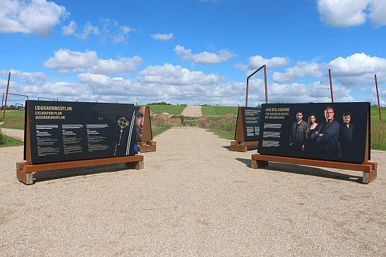
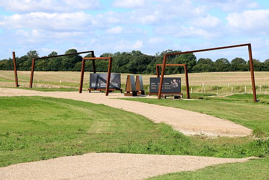
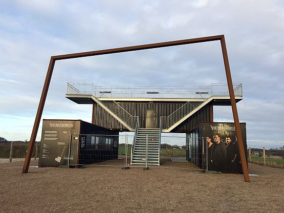
↕ Vallø Borgring am 11.12.2016 - Areal geschlossen ↕
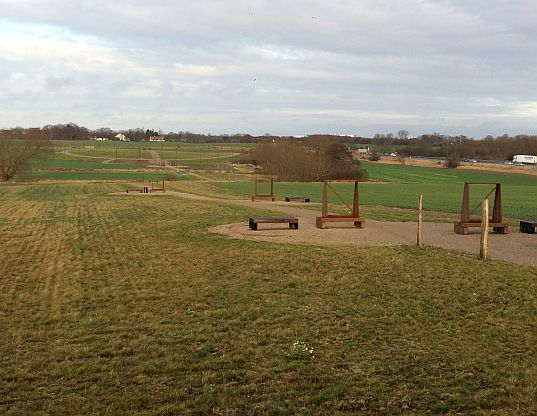
↕ Vallø Borgring am 11.12.2016 - Areal geschlossen ↕
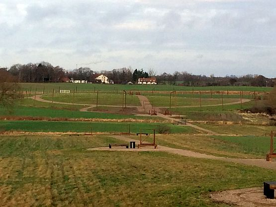
Auf der Anfahrt zu meinem 2022er Studientripp nach Kopenhagen, habe ich am Freitag, 23.09.2022, natürlich auch am Vallø Borgring Halt gemacht, zumal er ja direkt neben der Autobahn an der Ausfahrt 33 Lellinge liegt. Die Anlage wirkt aktuell verlassen, aber das wird sich ja demnächst ändern - siehe oben - Eröffnung Erlebnis Zentrum Frühjahr 2025.
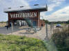 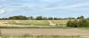 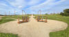 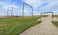 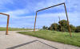


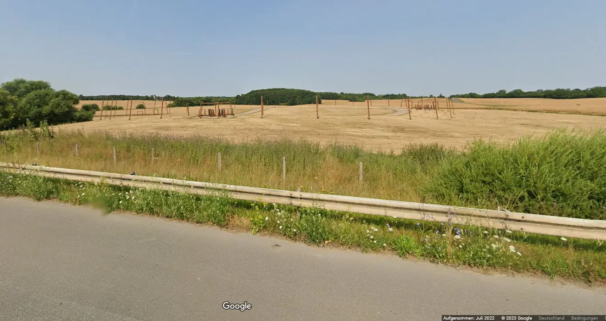
Google StreetView Ansicht (Ausschnitt) Autobahn E 55 Fahrtrichtung Süden, unmittelbar vor der Ausfahrt "33 Lellinge" - Screenshot vom 12.03.2023